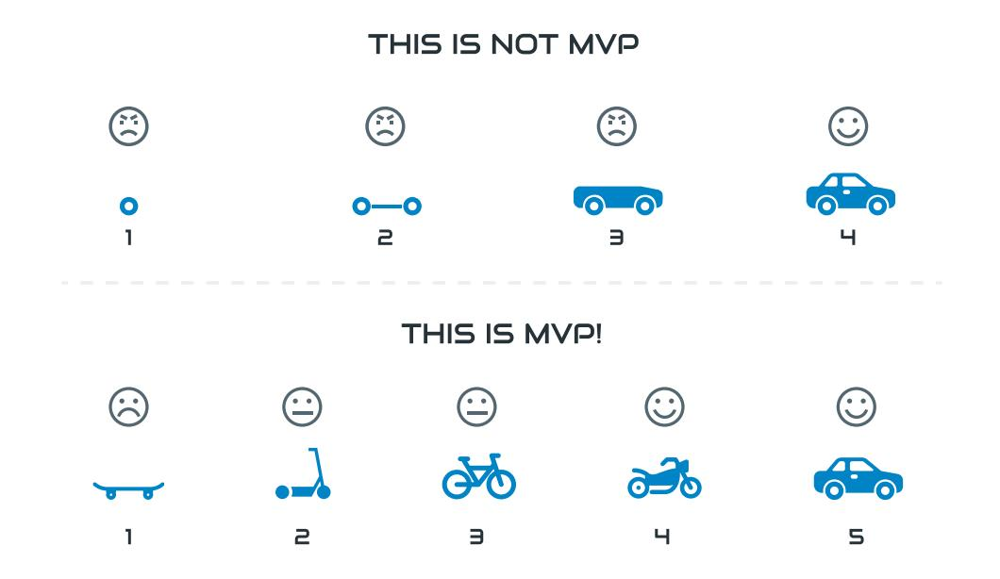

Minimum Viable Product– MVP ,בתרגום לעברית- התוצר בר-הקיימא הקטן ביותר.
MVP הוא פתרון עם המינימום ההכרחי של תכולות שנדרש כדי שלקוח יוכל להפיק ממנו ערך בעבור הארגון שלו. זהו פתרון שמפותח מתוך שאיפה לקצר ככל האפשר את זמן הבשלתו, ובעלות מזערית.
על פי רוב, תכלית פיתוחו של MVP היא להעמיד "אב-טיפוס", כדי לאסוף מידע מאומת מהשטח ולהוכיח היתכנות עסקית. MVP יכול לסייע בהבנת המשתמשים, השימושים, ההזדמנויות והאתגרים כבר בתחילת הדרך: מצד אחד, ה-MVP כולל פונקציונליות מינימלית שמאפשרת לנו לקבל נתונים אמינים על שדה הפעולה שלנו; מצד שני, הוא לא כרוך בהטלת מעמסה משאבית וכלכלית כבדה על הארגון, ובכך מקטין את הסיכון הכרוך בפיתוח פיתרון שאינו מתאים לצורך הקונקרטי.
כאשר אנו מפתחים MVP עלינו לוודא שאנו מקבלים מתהליך ייצורו והפעלתו נתונים ותשובות לסימני שאלה שעלו בשלב תכנון האסטרטגיה ובשלב תכנון המוצר. הנתונים והתשובות יהיו כאלה שיאפשרו ליזמים, לשותפיהם ולבעלי-עניין אחרים לקבל החלטות מיודעות ומבוססות, שאינן נשענות על השערות ותקוות בלבד.

כיצד בונים MVP טוב?
תנו לערכי הליבה להוביל, התחילו מקהל אחד אליו אתם מכוונים. הבסיס לפיתוח MVP נעוץ בהבנה של הערך המרכזי שהוא מציע והפרדת המוץ מהתבן – זיקוק מה שחייב להיות, מתוך כל מה שיכול היה להיות או שנחמד היה לקבל. ובמילים אחרות, מה must בפתרון ומה nice to have.
ערכי הליבה הם מהות ה MVP הדברים שבלעדיהם אין לו קיום. ברגע שנאבחן אותם, נוכל להחליט מהן התכונות שבהן יש להתמקד ושצריכות להיכלל במוצר. ככל שיהיו פחות ערכי-ליבה, כך גובר הסיכוי שנצליח להעמיד פיתרון שקל למדוד ולהעריך לאורו את הנחות-היסוד שלנו.
על סמך אותה הערכה, נוכל להציע צפי לעלויות, להיקפי שימושים ולשיעורי שימוש ולאפשרות להרחבת הפיתרון או להקמת פיתרונות נוספים לצידו - מבלי ליצור הסחות דעת (Scalability).
חשוב לזכור!
כל אלטרנטיבה או פונקציה נוספת שמוצעת למשתמשים עלולה להסיח את דעתם ולקלקל את תהליכי הצמיחה והפריסה של הפיתרון בעתיד. חישבו על "מה שחייב להיות" והשקיעו בבנייתו כראוי.
נדגיש כי MVP הוא קודם כל "בר-קיימא", מוצר של ממש ולא אב-טיפוס, תוכנית בלבד או "דף נחיתה". הוא אמנם צריך לספק רק את הערך המרכזי, אך כדי לשרת את תכליתו עליו להיות שלם ולעבוד היטב.
התחילו מקהל אחד
כפי שבחרנו ערכי ליבה למוצר, עלינו לבחור גם את קהלי היעד שה- MVP נועד לשרת. הפיתרון צריך לשקף את אותם קהלים ולהתאים לצרכים שלהם. רומא לא נבנתה ביום אחד ולכן - גם אם המוצר הסופי שלכם עתיד לשרת מספר קהלים או נתחי שוק שונים, הגרסה הראשונה שלו לא צריכה ולא בהכרח יכולה לשרת את כולם.
לא פחות חשוב- שיווק חד
כפי שאנו רוצים למקד את ערכי הליבה, את קהלי היעד ואת פעילות המשתמשים ב MVP- אנו צריכים למקד גם את מאמצי השיווק שלו, ובמקביל את איסוף וניתוח המידע על אפקטיביות השיווק.יש לחשוב היטב על אסטרטגיית השיווק, אנחנו רוצים להפיק את המירב מהמפגש הראשון שלנו עם המשתמשים, שכן מעבר למשמעויות הפיתוח, רתימת המשתמשים הראשונים היא משימה מאתגרת כשלעצמה. פנייה לקהלים מרובים יתר על המידה תקשה עליכם.
טיפים לסיכום
אתרו את קהל היעד המרכזי, מסגרו את נתח השוק הספציפי ואת קהלי היעד הראשונים של המוצר שלכם. בנוסף, כפי שהתמקדתם בערכי הליבה של הפיתרון - מקדו את פעולות השיווק שלכם, הציגו את התכונות החשובות ביותר של ה- MVP ואת הדרך בה הן עונות לצרכים של קהל היעד בו התמקדתם.